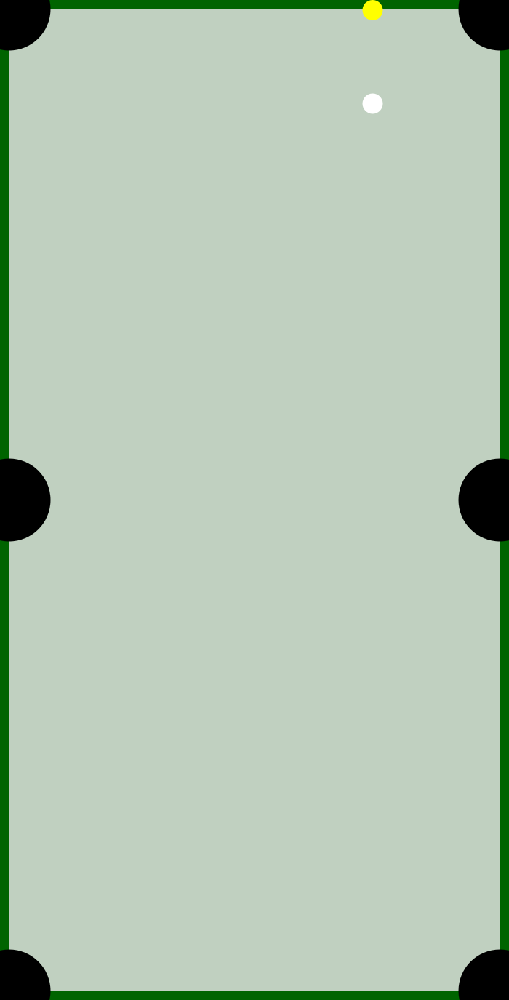

January 2023- April 2023
In Software Design II, me and a group of four collaborated developed a user-friendly menu together, that allowed users to track names’ popularities across time and determine their ethnicities. This was implemented by normalizing CSV files to a standard format and converting them to Pandas data frames in Python. The image below displays the beginning of the project, when the program standardizes CSV files.
Jan 2024 - April 2024
In CIS*2750, Software Systems Development and Integration, I programmed a C physic library to simulate billiards balls collisions, and then I integrated the program with a Python-based web server to dynamically generate SVG images onto an HTML website. The images below show where I was halfway through the project, as I just had two balls on the table with reasonable ball collisions.
